最初の設定からライトの使い方まで。まずはこちらからどうぞ
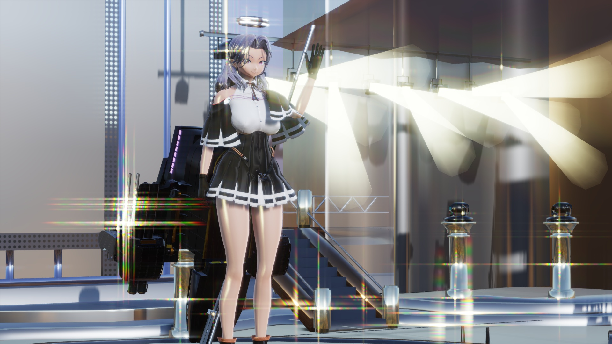
半必須な物から必要に応じてな物まで、今では大分増えたポストエフェクトについて
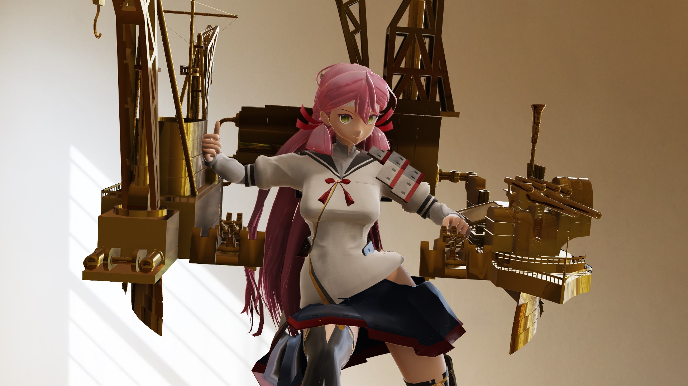
オリジナルの質感を探すには必須？楽しいですよ！
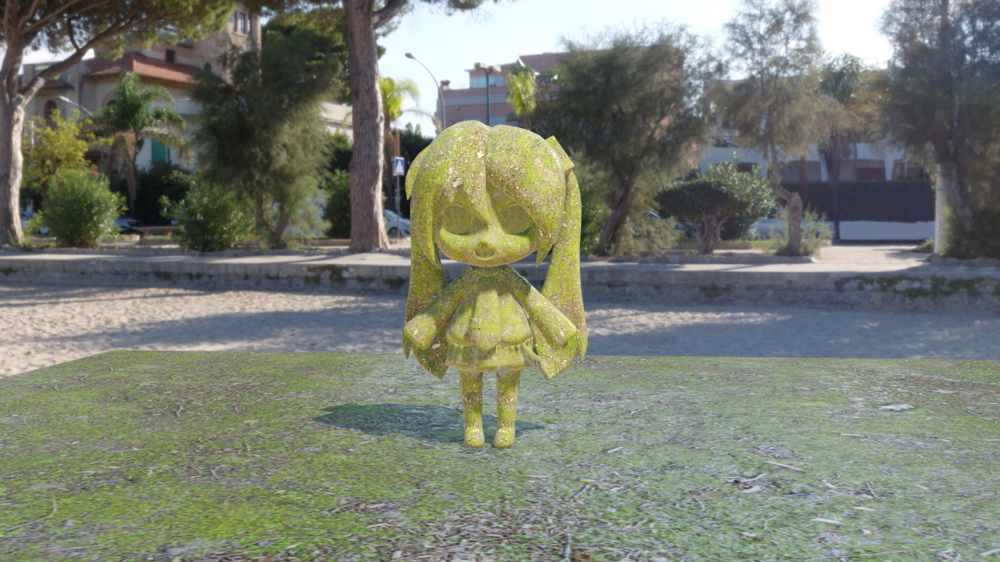
cc0textures.com等で公開されているPBRマテリアルや
AdobeCaptureで作ったマテリアルを変換して使えます
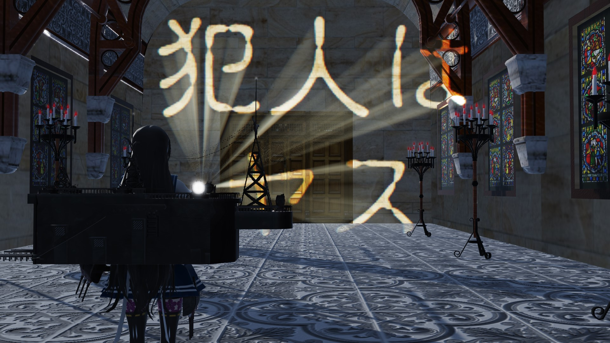
犯人はヤス
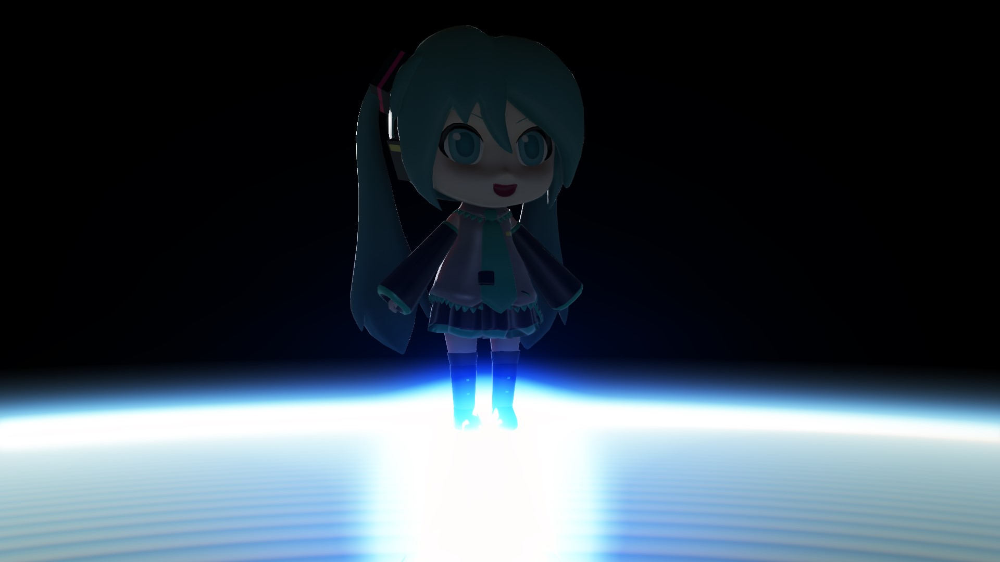
skyboxはライティングの半分？それ以上かもしれません！

背景にこだわりを！意外と凄い効果があります。
テカり方がヌルヌルして不自然な感じになる理由と対策についても書いてあります。
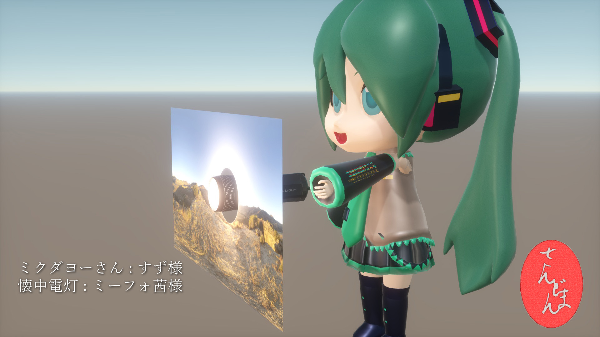
直射日光や強いライト入りのHDR画像から使いやすいskyboxを作る方法

VertexShaderを巻き込んだエフェクトの使い方です
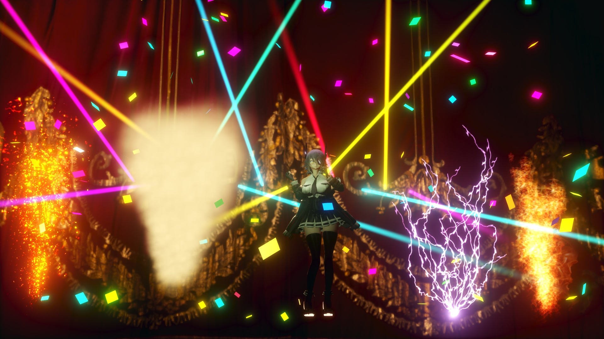
軽くて楽しいMV作成の味方、舞台装置エフェクトについて
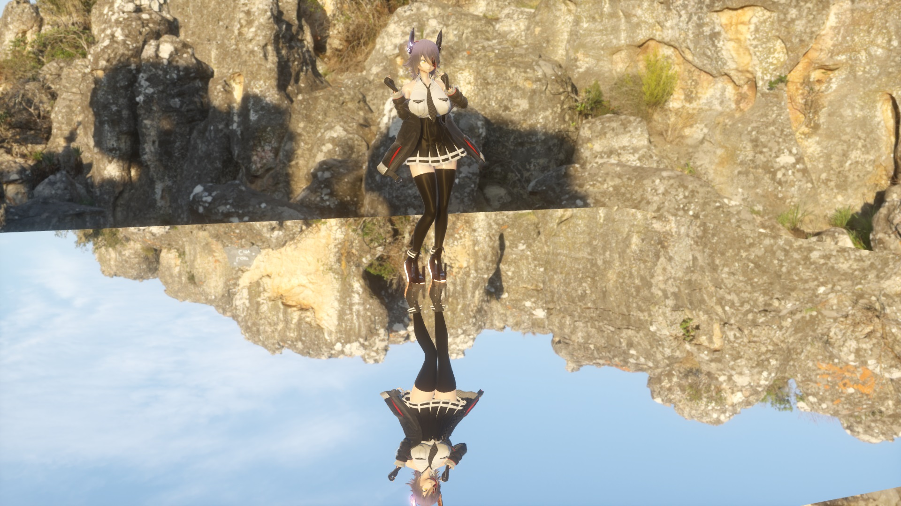
みんな大好き！針金P氏作WorkingFloorを元に、sdPBR用の平面映り込みエフェクトを作りました

調整すれば影はさらに綺麗になります！
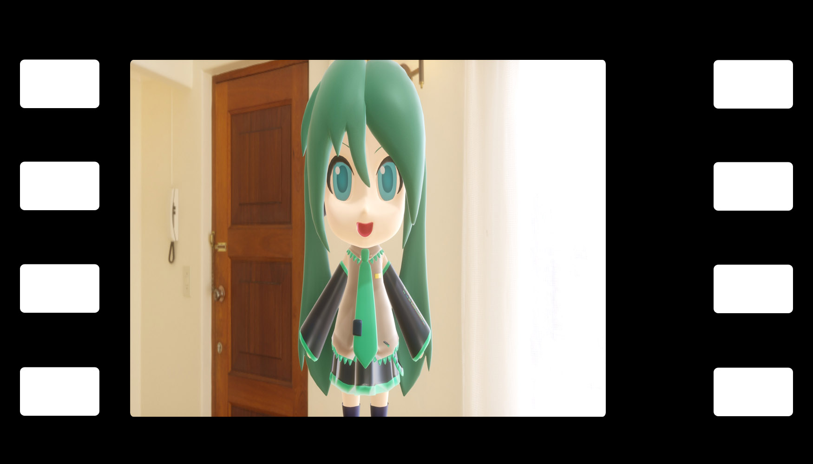
アナモルフィックレンズで映画監督気分！
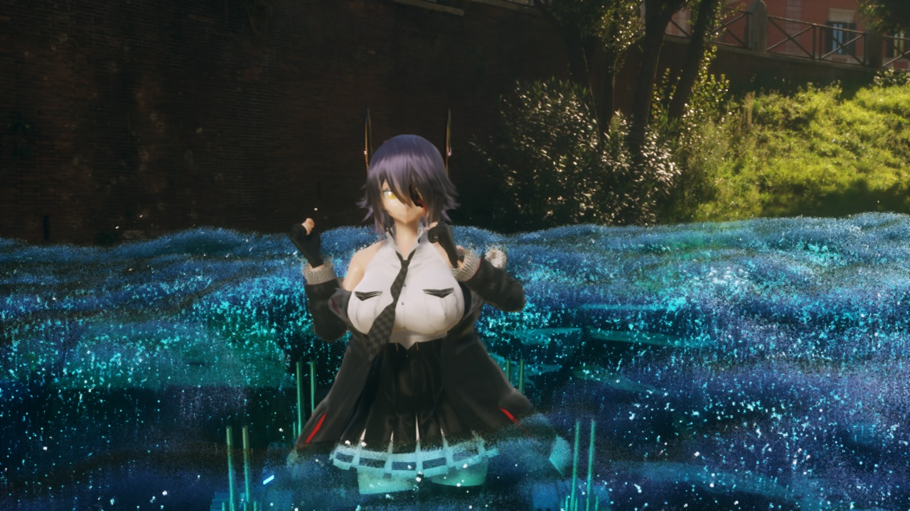
過度な期待はなさらぬよう
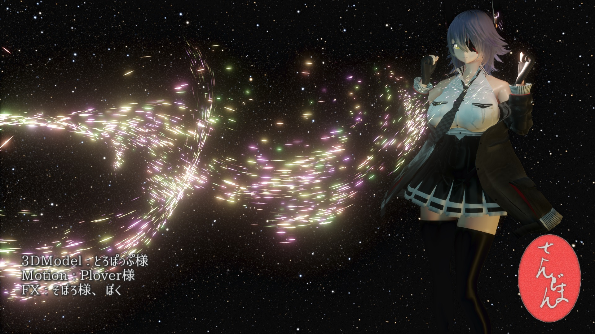
ちょっと複雑な動きの出来るパーティクルシステムです
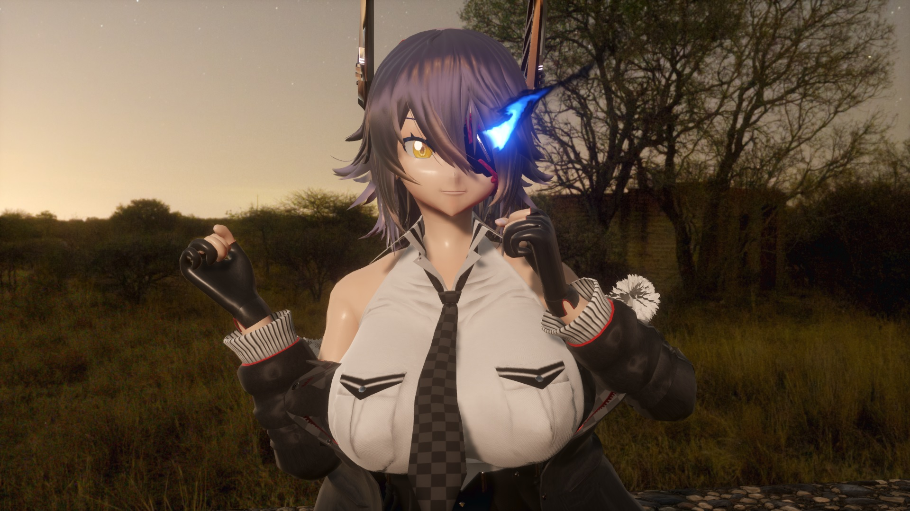
わりと軽い流体シミュの使い方
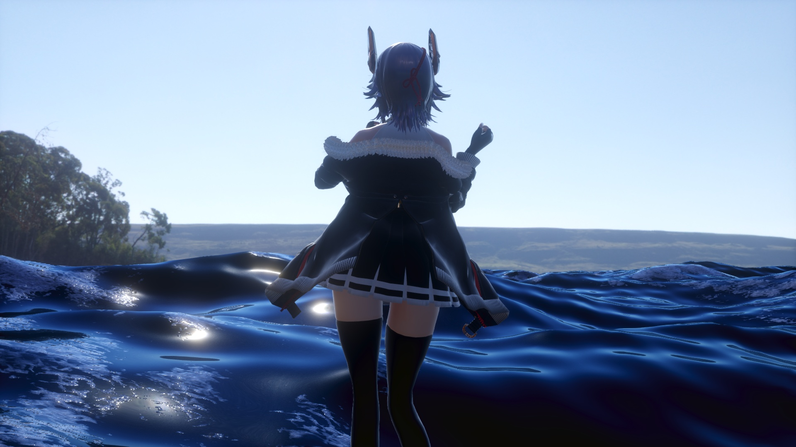
中～遠景用の海を作るエフェクトです
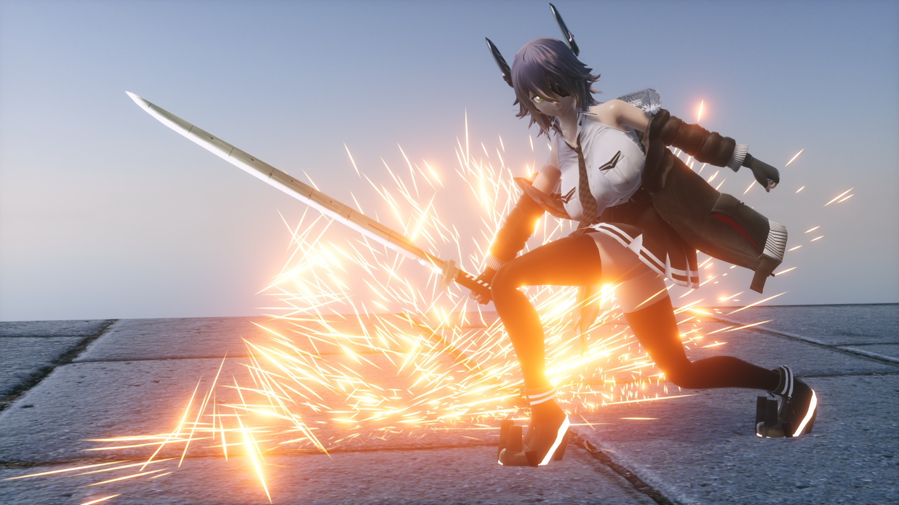
アクションMMDのお供、火花を散らすエフェクトです

リアルで草www
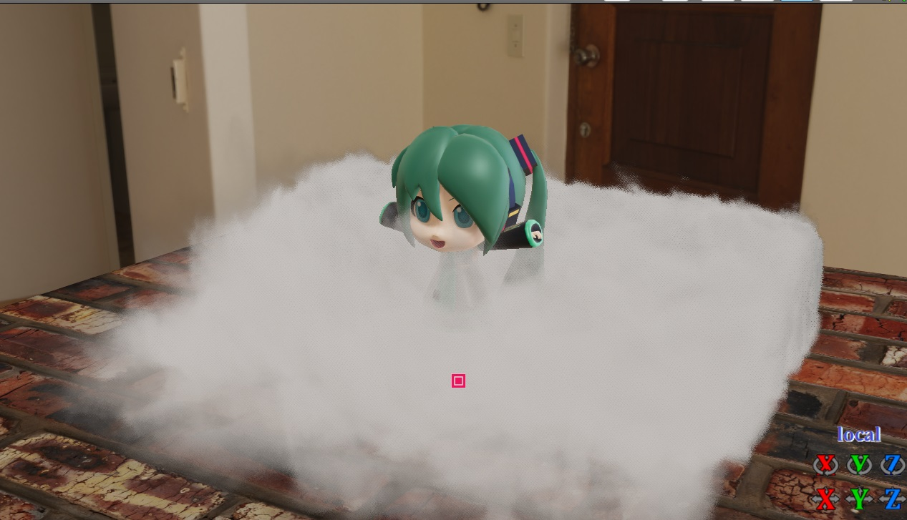
モコモコした煙を作ろう